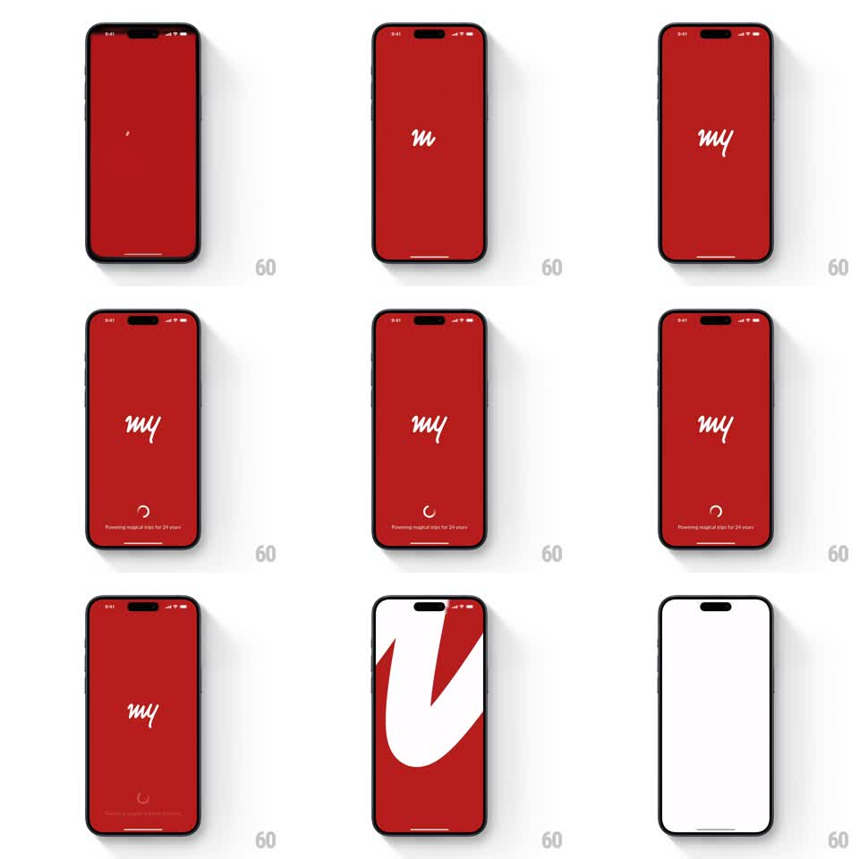

Media
Frame-by-frame

Rebuild this animation 1:1: MakeMyTrip's splash screen - a full-bleed red screen where the white cursive "my" logo draws itself on letter by letter above a loading spinner, then the monogram zooms to fill the screen and wipes to the app.

Rebuild this animation 1:1: MakeMyTrip's splash screen - a full-bleed red screen where the white cursive "my" logo draws itself on letter by letter above a loading spinner, then the monogram zooms to fill the screen and wipes to the app. ## Integration Integration: stack-agnostic spec - springs given as stiffness/damping, timed motions as duration + curve; map every value to your framework and animation library of choice. ## Scene A solid red splash screen. At center, the white cursive MakeMyTrip "my" wordmark writes itself on. Near the bottom, a small white loading spinner rotates above the tagline "Powering magical trips for 24 years". At the handoff, the "m" monogram scales up enormously until its curves fill the frame, and the red screen wipes away to white - the app entry. ## Motion spec Pattern: logo draw-on with exit zoom, ~2.5s total. - The wordmark draws on: each cursive letter's stroke animates in sequence (m, then y, ~700ms total), reading as handwriting, not a fade. - The spinner rotates steadily below (1 rev per 900ms, linear) while the tagline sits beneath it. - The completed logo holds briefly, then scales up from center (500ms, ease-in), its curves expanding past the screen edges until the frame is pure red and white. - The screen wipes to white (250ms) as the app content arrives behind it. ## Calibration - The red is MakeMyTrip's brand red - saturated, full bleed, no gradient. - The draw-on reads as script lettering; keep the stroke weight of the real wordmark. ## Reduced motion Logo fades in; spinner stops; crossfade to the app. ## Don't miss - The final zoom uses the monogram itself as the transition mask - no separate white flash. - The spinner keeps spinning right up to the zoom.